| name |
|---|
| Ada Lovelace |
| Marie Curie |
| Janaki Ammal |
| Chien-Shiung Wu |
| Katherine Johnson |
| Rosalind Franklin |
| Vera Rubin |
| Gladys West |
| Flossie Wong-Staal |
| Jennifer Doudna |
Data Wrangling II
STAT 7500
Katie Fitzgerald, adapted from datasciencebox.org
Goals
Today you will practice:
- data wrangling with
dplyrverbs - joining multiple data frames
- pivoting data frames to wide or long format
- planning a data wrangling pipeline to accomplish a desired task/visualization
Data Wrangling: Joining multiple datasets
We…
have multiple data frames
want to bring them together
Data: Women in science
Information on “10 women in science who changed the world”
Source: Discover Magazine
Inputs
# A tibble: 10 × 2
name profession
<chr> <chr>
1 Ada Lovelace Mathematician
2 Marie Curie Physicist and Chemist
3 Janaki Ammal Botanist
4 Chien-Shiung Wu Physicist
5 Katherine Johnson Mathematician
6 Rosalind Franklin Chemist
7 Vera Rubin Astronomer
8 Gladys West Mathematician
9 Flossie Wong-Staal Virologist and Molecular Biologist
10 Jennifer Doudna Biochemist # A tibble: 9 × 2
name known_for
<chr> <chr>
1 Ada Lovelace first computer algorithm
2 Marie Curie theory of radioactivity, discovery of elem…
3 Janaki Ammal hybrid species, biodiversity protection
4 Chien-Shiung Wu confim and refine theory of radioactive bet…
5 Katherine Johnson calculations of orbital mechanics critical …
6 Vera Rubin existence of dark matter
7 Gladys West mathematical modeling of the shape of the E…
8 Flossie Wong-Staal first scientist to clone HIV and create a m…
9 Jennifer Doudna one of the primary developers of CRISPR, a …Desired output
# A tibble: 10 × 5
name profession birth_year death_year known_for
<chr> <chr> <dbl> <dbl> <chr>
1 Ada Lovelace Mathematic… NA NA first co…
2 Marie Curie Physicist … NA NA theory o…
3 Janaki Ammal Botanist 1897 1984 hybrid s…
4 Chien-Shiung Wu Physicist 1912 1997 confim a…
5 Katherine Johnson Mathematic… 1918 2020 calculat…
6 Rosalind Franklin Chemist 1920 1958 <NA>
7 Vera Rubin Astronomer 1928 2016 existenc…
8 Gladys West Mathematic… 1930 NA mathemat…
9 Flossie Wong-Staal Virologist… 1947 NA first sc…
10 Jennifer Doudna Biochemist 1964 NA one of t…Inputs, reminder
Joining data frames
Joining data frames
Mutating joins (add variables in)
left_join(): keeps all rows in xright_join(): keeps all rows in yfull_join(): keeps all rows in x or yinner_join(): only keeps rows from x that have a matching key in y
Joining data frames
Filtering joins (remove rows based on matches, don’t bring in new variables)
semi_join(): only keeps rows from x that have a match in y; does not bring in y’s columnsanti_join(): only keeps rows from x that do NOT have a match in y; does not bring in y’s columns
Setup
For the next few slides…
left_join()

left_join()
What do you expect? How many rows and columns?
# A tibble: 10 × 4
name profession birth_year death_year
<chr> <chr> <dbl> <dbl>
1 Ada Lovelace Mathematician NA NA
2 Marie Curie Physicist and Chemist NA NA
3 Janaki Ammal Botanist 1897 1984
4 Chien-Shiung Wu Physicist 1912 1997
5 Katherine Johnson Mathematician 1918 2020
6 Rosalind Franklin Chemist 1920 1958
7 Vera Rubin Astronomer 1928 2016
8 Gladys West Mathematician 1930 NA
9 Flossie Wong-Staal Virologist and Molec… 1947 NA
10 Jennifer Doudna Biochemist 1964 NAright_join()
right_join()
What do you expect? How many rows and columns?
# A tibble: 8 × 4
name profession birth_year death_year
<chr> <chr> <dbl> <dbl>
1 Janaki Ammal Botanist 1897 1984
2 Chien-Shiung Wu Physicist 1912 1997
3 Katherine Johnson Mathematician 1918 2020
4 Rosalind Franklin Chemist 1920 1958
5 Vera Rubin Astronomer 1928 2016
6 Gladys West Mathematician 1930 NA
7 Flossie Wong-Staal Virologist and Molecu… 1947 NA
8 Jennifer Doudna Biochemist 1964 NAfull_join()

full_join()
# A tibble: 10 × 4
name birth_year death_year known_for
<chr> <dbl> <dbl> <chr>
1 Janaki Ammal 1897 1984 hybrid species, biod…
2 Chien-Shiung Wu 1912 1997 confim and refine th…
3 Katherine Johnson 1918 2020 calculations of orbi…
4 Rosalind Franklin 1920 1958 <NA>
5 Vera Rubin 1928 2016 existence of dark ma…
6 Gladys West 1930 NA mathematical modelin…
7 Flossie Wong-Staal 1947 NA first scientist to c…
8 Jennifer Doudna 1964 NA one of the primary d…
9 Ada Lovelace NA NA first computer algor…
10 Marie Curie NA NA theory of radioactiv…inner_join()

inner_join()
# A tibble: 7 × 4
name birth_year death_year known_for
<chr> <dbl> <dbl> <chr>
1 Janaki Ammal 1897 1984 hybrid species, biodi…
2 Chien-Shiung Wu 1912 1997 confim and refine the…
3 Katherine Johnson 1918 2020 calculations of orbit…
4 Vera Rubin 1928 2016 existence of dark mat…
5 Gladys West 1930 NA mathematical modeling…
6 Flossie Wong-Staal 1947 NA first scientist to cl…
7 Jennifer Doudna 1964 NA one of the primary de…semi_join()
semi_join()
What do you expect? How many rows and columns?
# A tibble: 7 × 3
name birth_year death_year
<chr> <dbl> <dbl>
1 Janaki Ammal 1897 1984
2 Chien-Shiung Wu 1912 1997
3 Katherine Johnson 1918 2020
4 Vera Rubin 1928 2016
5 Gladys West 1930 NA
6 Flossie Wong-Staal 1947 NA
7 Jennifer Doudna 1964 NAanti_join()

anti_join()
Putting it all together
# A tibble: 10 × 5
name profession birth_year death_year known_for
<chr> <chr> <dbl> <dbl> <chr>
1 Ada Lovelace Mathematic… NA NA first co…
2 Marie Curie Physicist … NA NA theory o…
3 Janaki Ammal Botanist 1897 1984 hybrid s…
4 Chien-Shiung Wu Physicist 1912 1997 confim a…
5 Katherine Johnson Mathematic… 1918 2020 calculat…
6 Rosalind Franklin Chemist 1920 1958 <NA>
7 Vera Rubin Astronomer 1928 2016 existenc…
8 Gladys West Mathematic… 1930 NA mathemat…
9 Flossie Wong-Staal Virologist… 1947 NA first sc…
10 Jennifer Doudna Biochemist 1964 NA one of t…Case study: Student records
Student records
- Have:
- Enrolment: official university enrolment records
- Survey: Student provided info; missing students who never filled it out and including students who filled it out but dropped the class
- Want: Survey info for all enrolled in class
Quiz
Which code is guaranteed to retain rows for all students enrolled in the course, but not students who dropped (i.e. are not currently enrolled)?
A. enrolment |> left_join(survey, by = "id")
B. enrolment |> inner_join(survey, by = "id")
C. enrolment |> semi_join(survey, by = "id")
D. enrolment |> full_join(survey, by = "id")
Quiz
Which code will return rows for students who did not fill out the survey?
A. enrolment |> semi_join(survey, by = "id")
B. enrolment |> anti_join(survey, by = "id")
C. survey |> semi_join(enrolment, by = "id")
D. survey |> anti_join(enrolment, by = "id")
Quiz
Which code will return rows for students who filled out the survey but dropped the course?
A. enrolment |> semi_join(survey, by = "id")
B. enrolment |> anti_join(survey, by = "id")
C. survey |> semi_join(enrolment, by = "id")
D. survey |> anti_join(enrolment, by = "id")
Student records
Your turn: week_09.qmd
Recall: flights contains data about every flight that departed La Guardia, JFK, or Newark airports in 2013
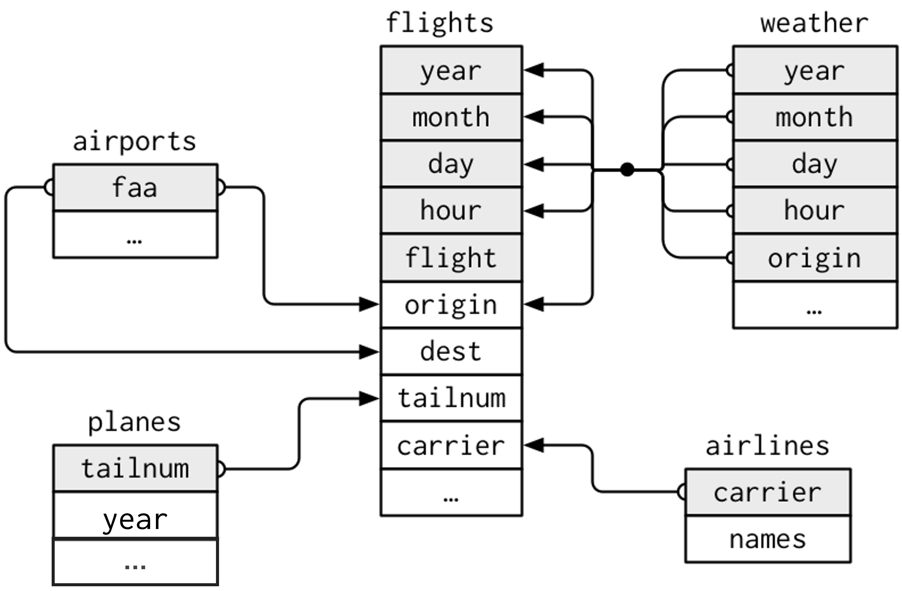
Figure 1
Exercises 1 - 5
How could we create this?
In groups, brainstorm the data wrangling required to create this visualization.
- What does the data need to look like? What does one row of the data represent? What columns do you need? Sketch out a few “dummy” rows of what you expect the data to contain.
- Which of the above columns already exist (in which datasets), and which ones need to be created?
- What joining and/or aggregation steps need to take place? Write some pseudocode for this.
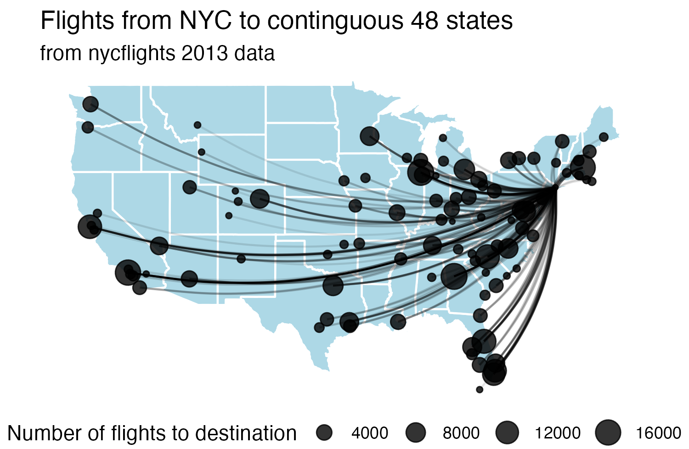
Case study: Grocery sales
Grocery sales
- Have:
- Purchases: One row per customer per item, listing purchases they made
- Prices: One row per item in the store, listing their prices
- Want: Total revenue
Grocery sales
We…
have data organized in a way that does not support our analysis
want to reorganise the data to carry on with our analysis
Data: Sales
We have…
# A tibble: 2 × 4
customer_id item_1 item_2 item_3
<dbl> <chr> <chr> <chr>
1 1 bread milk banana
2 2 milk toilet paper <NA> . . . ::: {.column width=“50%”} ### We want…
# A tibble: 6 × 3
customer_id item_no item
<dbl> <chr> <chr>
1 1 item_1 bread
2 1 item_2 milk
3 1 item_3 banana
4 2 item_1 milk
5 2 item_2 toilet paper
6 2 item_3 <NA> :::
A grammar of data tidying

The goal of tidyr is to help you tidy your data via
- pivoting for going between wide and long data
- splitting and combining character columns
- nesting and unnesting columns
- clarifying how
NAs should be treated
Pivoting data
Not this…

but this!
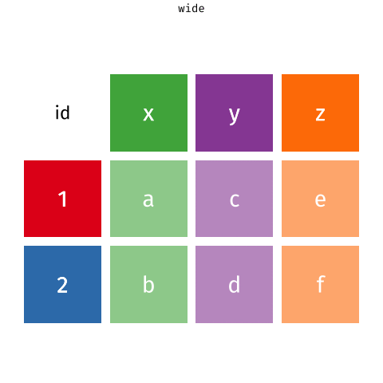
Wider vs. longer
wider
more columns
# A tibble: 2 × 4
customer_id item_1 item_2 item_3
<dbl> <chr> <chr> <chr>
1 1 bread milk banana
2 2 milk toilet paper <NA> . . . ::: {.column width=“50%”} ### longer more rows
# A tibble: 6 × 3
customer_id item_no item
<dbl> <chr> <chr>
1 1 item_1 bread
2 1 item_2 milk
3 1 item_3 banana
4 2 item_1 milk
5 2 item_2 toilet paper
6 2 item_3 <NA> :::
pivot_longer()
pivot_longer()
pivot_longer()
pivot_longer()
Customers \(\rightarrow\) purchases
# A tibble: 6 × 3
customer_id item_no item
<dbl> <chr> <chr>
1 1 item_1 bread
2 1 item_2 milk
3 1 item_3 banana
4 2 item_1 milk
5 2 item_2 toilet paper
6 2 item_3 <NA> Why pivot?
Most likely, because the next step of your analysis needs it
Purchases \(\rightarrow\) customers
data(as usual)names_from: which column contains the values that should become column names in the wide formatvalues_from: which column contains the values that should fill the new columns in the wide format
Case study: Approval rating of Donald Trump
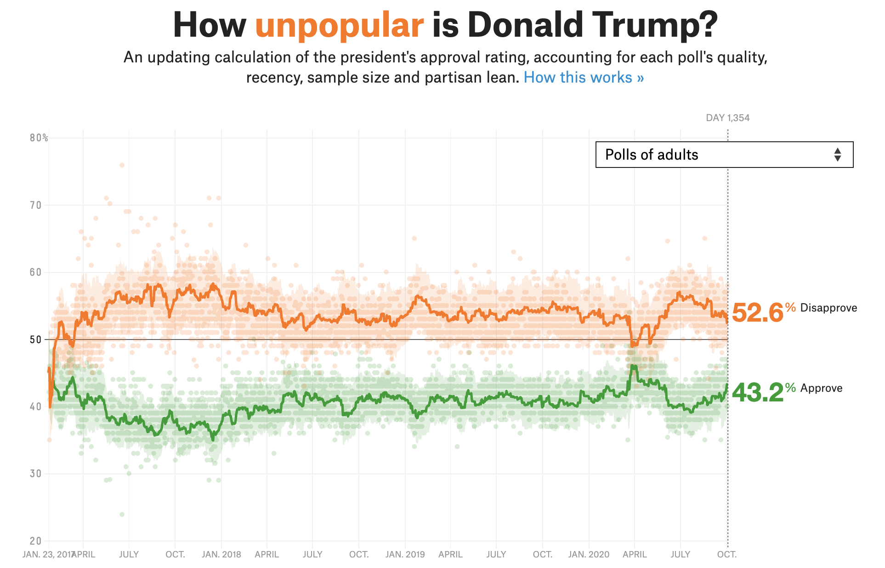
Source: FiveThirtyEight
Goal
Write pseudocode for the steps required to create this visualization

Data
# A tibble: 2,702 × 4
subgroup date approval disapproval
<chr> <date> <dbl> <dbl>
1 Voters 2020-10-04 44.7 52.2
2 Adults 2020-10-04 43.2 52.6
3 Adults 2020-10-03 43.2 52.6
4 Voters 2020-10-03 45.0 51.7
5 Adults 2020-10-02 43.3 52.4
6 Voters 2020-10-02 44.5 52.1
7 Voters 2020-10-01 44.1 52.8
8 Adults 2020-10-01 42.7 53.3
9 Adults 2020-09-30 42.2 53.7
10 Voters 2020-09-30 44.2 52.7
# ℹ 2,692 more rowsAesthetic mappings:
✓ x = date
✗ y = rating_value
✗ color = rating_type
Facet:
✓ subgroup (Adults and Voters)
Goal
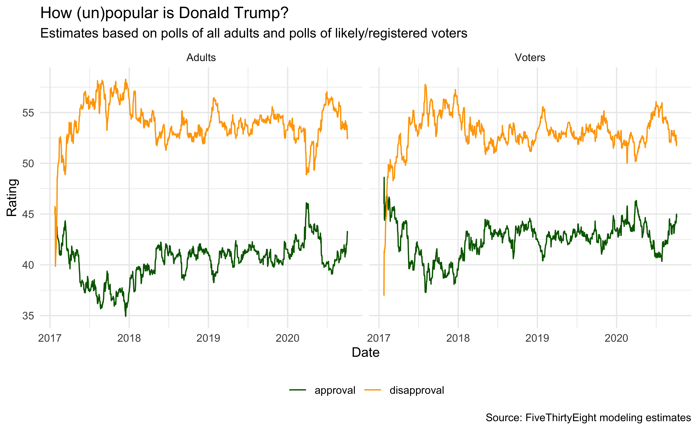
Pivot
# A tibble: 5,404 × 4
subgroup date rating_type rating_value
<chr> <date> <chr> <dbl>
1 Voters 2020-10-04 approval 44.7
2 Voters 2020-10-04 disapproval 52.2
3 Adults 2020-10-04 approval 43.2
4 Adults 2020-10-04 disapproval 52.6
5 Adults 2020-10-03 approval 43.2
6 Adults 2020-10-03 disapproval 52.6
7 Voters 2020-10-03 approval 45.0
8 Voters 2020-10-03 disapproval 51.7
9 Adults 2020-10-02 approval 43.3
10 Adults 2020-10-02 disapproval 52.4
# ℹ 5,394 more rowsPlot
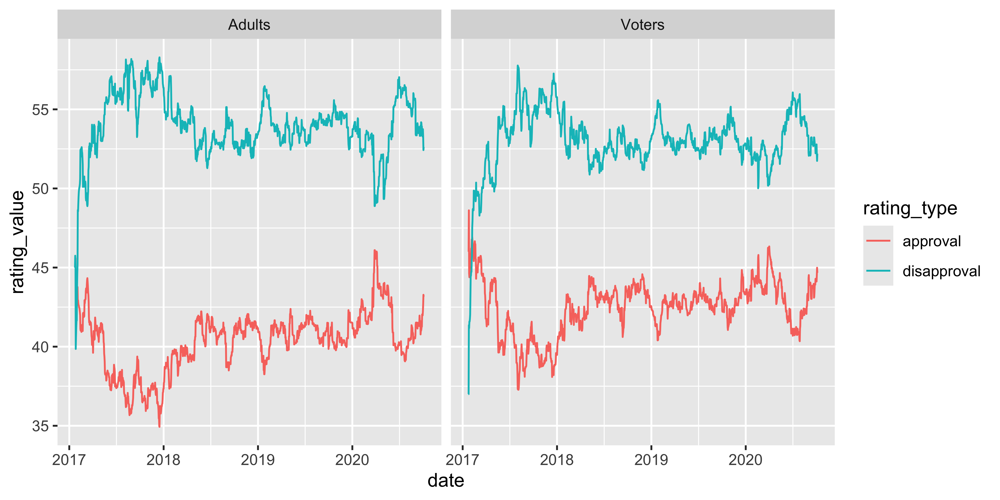
ggplot(trump_longer,
aes(x = date, y = rating_value,
color = rating_type, group = rating_type)) +
geom_line() +
facet_wrap(~ subgroup) +
scale_color_manual(values = c("darkgreen", "orange")) +
labs(
x = "Date", y = "Rating",
color = NULL,
title = "How (un)popular is Donald Trump?",
subtitle = "Estimates based on polls of all adults and polls of likely/registered voters",
caption = "Source: FiveThirtyEight modeling estimates"
)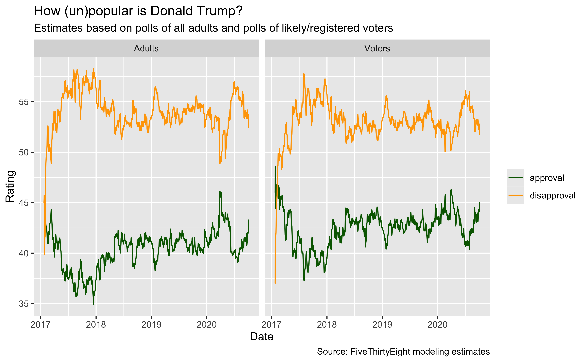
ggplot(trump_longer,
aes(x = date, y = rating_value,
color = rating_type, group = rating_type)) +
geom_line() +
facet_wrap(~ subgroup) +
scale_color_manual(values = c("darkgreen", "orange")) +
labs(
x = "Date", y = "Rating",
color = NULL,
title = "How (un)popular is Donald Trump?",
subtitle = "Estimates based on polls of all adults and polls of likely/registered voters",
caption = "Source: FiveThirtyEight modeling estimates"
) +
theme_minimal() +
theme(legend.position = "bottom")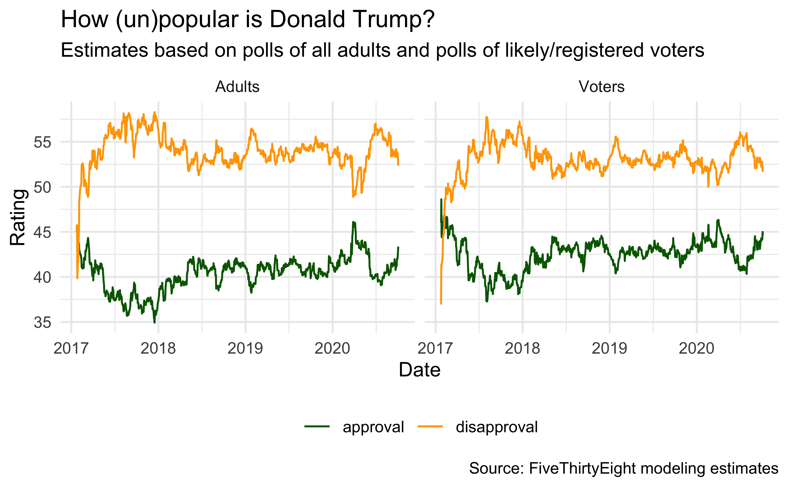
Extra slides: Case study: Berkeley admission data
Berkeley admission data
- The Graduate Division of the University of California, Berkeley conducted this study in the early 1970s to evaluate whether graduate admissions showed gender bias.
- The data come from six departments. For confidentiality we’ll call them A-F.
- We have information on whether the applicant was male or female and whether they were admitted or rejected.
- First, we will evaluate whether the percentage of males admitted is indeed higher than females, overall. Next, we will calculate the same percentage for each department.
Data
# A tibble: 4,526 × 3
admit gender dept
<fct> <fct> <ord>
1 Admitted Male A
2 Admitted Male A
3 Admitted Male A
4 Admitted Male A
5 Admitted Male A
6 Admitted Male A
7 Admitted Male A
8 Admitted Male A
9 Admitted Male A
10 Admitted Male A
11 Admitted Male A
12 Admitted Male A
13 Admitted Male A
14 Admitted Male A
15 Admitted Male A
# ℹ 4,511 more rows# A tibble: 2 × 2
gender n
<fct> <int>
1 Female 1835
2 Male 2691# A tibble: 6 × 2
dept n
<ord> <int>
1 A 933
2 B 585
3 C 918
4 D 792
5 E 584
6 F 714# A tibble: 2 × 2
admit n
<fct> <int>
1 Rejected 2771
2 Admitted 1755What can you say about the overall gender distribution? Hint: Calculate the following probabilities: \(P(Admit | Male)\) and \(P(Admit | Female)\).
# A tibble: 4 × 4
# Groups: gender [2]
gender admit n prop_admit
<fct> <fct> <int> <dbl>
1 Female Rejected 1278 0.696
2 Female Admitted 557 0.304
3 Male Rejected 1493 0.555
4 Male Admitted 1198 0.445- \(P(Admit | Female)\) = 0.304
- \(P(Admit | Male)\) = 0.445
Overall gender distribution
What can you say about the gender distribution by department?
# A tibble: 24 × 4
dept gender admit n
<ord> <fct> <fct> <int>
1 A Female Rejected 19
2 A Female Admitted 89
3 A Male Rejected 313
4 A Male Admitted 512
5 B Female Rejected 8
6 B Female Admitted 17
7 B Male Rejected 207
8 B Male Admitted 353
9 C Female Rejected 391
10 C Female Admitted 202
# ℹ 14 more rowsLet’s try again… What can you say about the gender distribution by department?
# A tibble: 4 × 8
gender admit A B C D E F
<fct> <fct> <int> <int> <int> <int> <int> <int>
1 Female Rejected 19 8 391 244 299 317
2 Female Admitted 89 17 202 131 94 24
3 Male Rejected 313 207 205 279 138 351
4 Male Admitted 512 353 120 138 53 22Gender distribution, by department
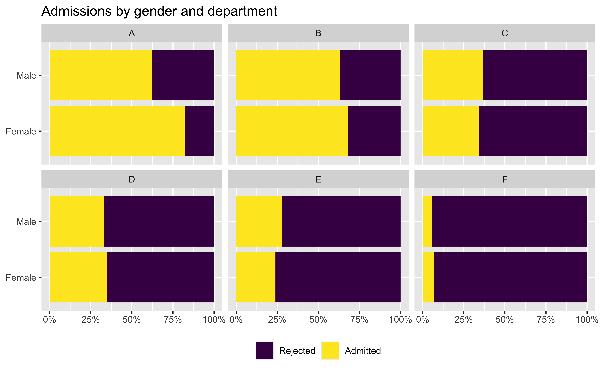
Case for gender discrimination?


Closer look at departments
# A tibble: 12 × 5
# Groups: dept, gender [12]
dept gender n_admitted n_applied prop_admit
<ord> <fct> <int> <int> <dbl>
1 A Female 89 108 0.824
2 A Male 512 825 0.621
3 B Female 17 25 0.68
4 B Male 353 560 0.630
5 C Female 202 593 0.341
6 C Male 120 325 0.369
7 D Female 131 375 0.349
8 D Male 138 417 0.331
9 E Female 94 393 0.239
10 E Male 53 191 0.277
11 F Female 24 341 0.0704
12 F Male 22 373 0.0590Simpson’s paradox
Relationship between two variables
# A tibble: 8 × 3
x y z
<dbl> <dbl> <chr>
1 2 4 A
2 3 3 A
3 4 2 A
4 5 1 A
5 6 11 B
6 7 10 B
7 8 9 B
8 9 8 B 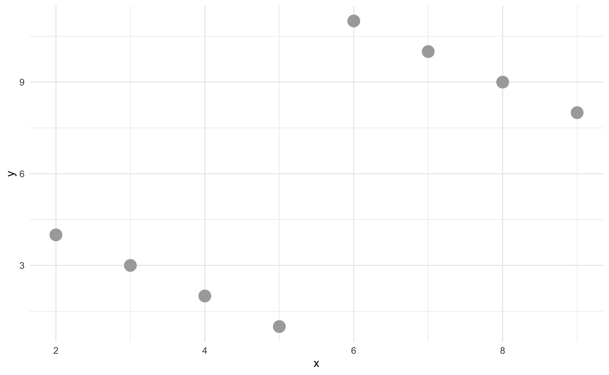
Relationship between two variables
# A tibble: 8 × 3
x y z
<dbl> <dbl> <chr>
1 2 4 A
2 3 3 A
3 4 2 A
4 5 1 A
5 6 11 B
6 7 10 B
7 8 9 B
8 9 8 B 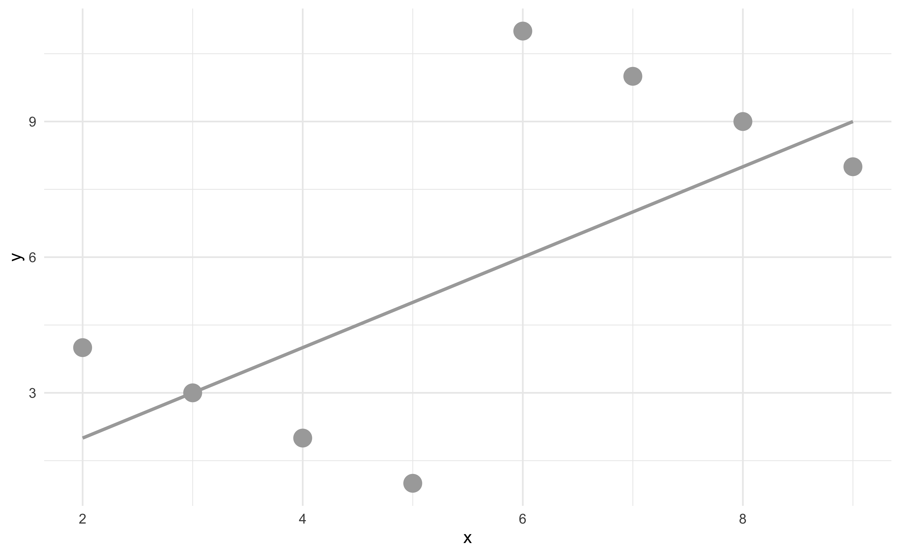
Considering a third variable
# A tibble: 8 × 3
x y z
<dbl> <dbl> <chr>
1 2 4 A
2 3 3 A
3 4 2 A
4 5 1 A
5 6 11 B
6 7 10 B
7 8 9 B
8 9 8 B 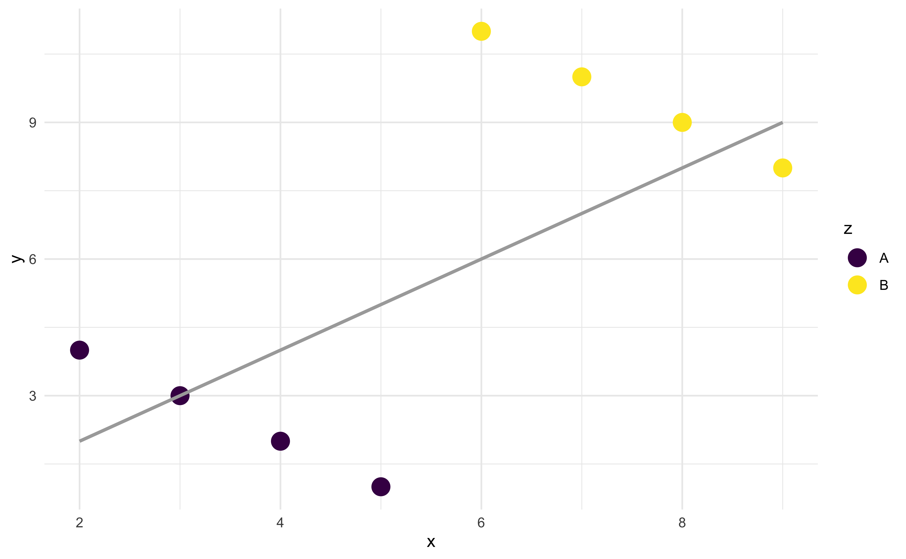
Relationship between three variables
# A tibble: 8 × 3
x y z
<dbl> <dbl> <chr>
1 2 4 A
2 3 3 A
3 4 2 A
4 5 1 A
5 6 11 B
6 7 10 B
7 8 9 B
8 9 8 B 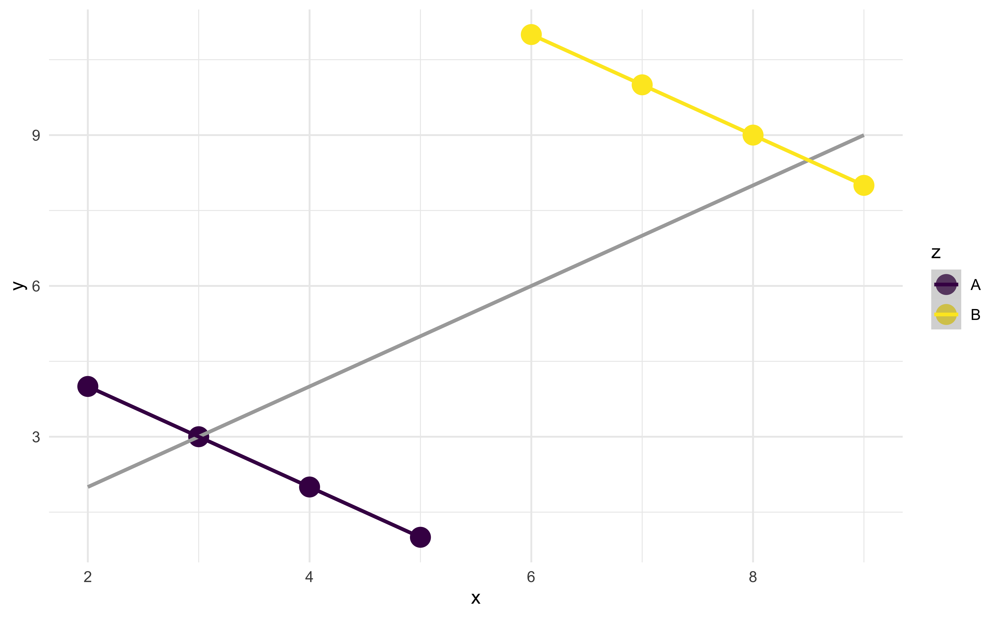
Simpson’s paradox
- Not considering an important variable when studying a relationship can result in Simpson’s paradox
- Simpson’s paradox illustrates the effect that omission of an explanatory variable can have on the measure of association between another explanatory variable and a response variable
- The inclusion of a third variable in the analysis can change the apparent relationship between the other two variables
Aside: group_by() and count()
What does group_by() do?
group_by() takes an existing data frame and converts it into a grouped data frame where subsequent operations are performed “once per group”
# A tibble: 4,526 × 3
# Groups: gender [2]
admit gender dept
<fct> <fct> <ord>
1 Admitted Male A
2 Admitted Male A
3 Admitted Male A
4 Admitted Male A
5 Admitted Male A
6 Admitted Male A
7 Admitted Male A
8 Admitted Male A
9 Admitted Male A
10 Admitted Male A
# ℹ 4,516 more rowsWhat does group_by() not do?
group_by() does not sort the data, arrange() does
# A tibble: 4,526 × 3
# Groups: gender [2]
admit gender dept
<fct> <fct> <ord>
1 Admitted Male A
2 Admitted Male A
3 Admitted Male A
4 Admitted Male A
5 Admitted Male A
6 Admitted Male A
7 Admitted Male A
8 Admitted Male A
9 Admitted Male A
10 Admitted Male A
# ℹ 4,516 more rows# A tibble: 4,526 × 3
admit gender dept
<fct> <fct> <ord>
1 Admitted Female A
2 Admitted Female A
3 Admitted Female A
4 Admitted Female A
5 Admitted Female A
6 Admitted Female A
7 Admitted Female A
8 Admitted Female A
9 Admitted Female A
10 Admitted Female A
# ℹ 4,516 more rowsWhat does group_by() not do?
group_by() does not create frequency tables, count() does
# A tibble: 4,526 × 3
# Groups: gender [2]
admit gender dept
<fct> <fct> <ord>
1 Admitted Male A
2 Admitted Male A
3 Admitted Male A
4 Admitted Male A
5 Admitted Male A
6 Admitted Male A
7 Admitted Male A
8 Admitted Male A
9 Admitted Male A
10 Admitted Male A
# ℹ 4,516 more rowsUndo grouping with ungroup()
count() is shorthand
count() is shorthand for group_by() followed by summarise() to count the number of observations in each group
count can take multiple arguments
summarise() after group_by()
count()ungroups after itselfsummarise()peels off one layer of grouping by default, or you can specify a different behavior
`summarise()` has regrouped the output.
ℹ Summaries were computed grouped by gender and admit.
ℹ Output is grouped by gender.
ℹ Use `summarise(.groups = "drop_last")` to silence this
message.
ℹ Use `summarise(.by = c(gender, admit))` for per-operation
grouping (`?dplyr::dplyr_by`) instead.# A tibble: 4 × 3
# Groups: gender [2]
gender admit n
<fct> <fct> <int>
1 Female Rejected 1278
2 Female Admitted 557
3 Male Rejected 1493
4 Male Admitted 1198